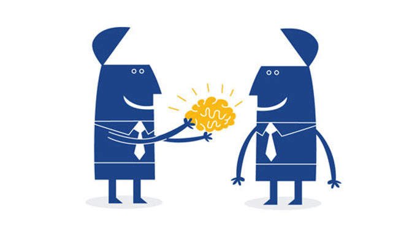

Practicas y metodologias de scum
Desarrollo Incremental
El desarrollo incremental o iterativo es una de las practicas mas comunes en cualquier tipo de desarrollo de software, ya sea tradicional o ágil. Este viene muy apegado a la metodología de cascada.
El desarrollo incremental es aquel que se realiza a base de iteraciones, fue concebido al inicio para la metodología de cascada. El método de cascada estipulaba que en cada iteración se deben cumplir ciertos objetivos por fase.
En Scrum esto sigue aplicándose, debido a que scrum se maneja a través de sprints que corresponderían a la iteración, ha diferencia que en cascada los objetivos eran determinados al inicio del proyecto, en Scrum estos se definen al inicio del sprint, lo que facilita la aplicación de cambios al proyecto
Potenciación de equipo
En los proyectos tradicionales el jefe de proyecto identifica las tareas a realizar, las estima y las asigna. En cambio, en Scrum los equipos son autogestionados, se potencia el trabajo en equipo, se motiva al equipo y se consigue el compromiso de sus miembros mediante las técnicas que se aplican en las propias actividades de Scrum:
En la reunión de planificación de la iteración:
- Se otorga al equipo la responsabilidad de decidir qué requisitos, objetivos o tareas puede desarrollar en cada iteración, de manera que el equipo se comprometa de manera conjunta a ello.
- Se otorga al equipo la autoridad para gestionar el modo en que realizará su trabajo, dado que ha adquirido el compromiso de proporcionar unos resultados determinados al finalizar la iteración.
- Establecimiento de criterios comunes. El equipo realiza conjuntamente:
- La identificación de las tareas que es necesario realizar en la iteración.
- La estimación del esfuerzo de las tareas.
- La [auto]asignación de tareas entre los miembros del equipo.
- Al finalizar cada iteración es el propio equipo quien realiza la demostración de los requisitos completados y quien, en la retrospectiva, analiza las mejoras a realizar en su modo de trabajar.
Colaboración y comunicación entre el equipo y con el cliente
Scrum sistematiza la colaboración entre el cliente y el equipo:
El equipo participa con el cliente en la creación de la lista de objetivos/requisitos priorizada del producto o proyecto, en las reuniones de replanificación del producto o proyecto, proporcionando la estimación de su esfuerzo y aportando mejoras, nuevas ideas e innovación.
En el inicio de cada iteración, en la reunión de planificación de la iteración el equipo pregunta al cliente los detalles que pueda necesitar de los requisitos para poder dimensionar mejor el contenido de la iteración.
Al finalizar cada iteración el equipo realiza una demostración al cliente de los requisitos completados.
Scrum sistematiza la colaboración dentro del equipo mediante las siguientes actividades:
- Reunión de planificación de la iteración
- Reunión diaria de sincronización del equipo
- Retrospectiva
- También es de especial importancia que todo el equipo trabaje en un mismo espacio abierto, de manera que se maximice la comunicación cara a cara.

Control empirico
El empirismo consiste en que el conocimiento aplicado proviene de la experiencia. Esto es la base del scrum ya que la aplicación del Scrum se basa en la experiencia.
En el scrum existen ciertos elementos, el scrum master y el sprint retrospective, que son la base del control empírico. El Scrum master es el miembro del equipo que conoce la metodología que se aplicara y ayuda a los miembros del equipo a poder aplicarlo, y si alguien es nuevo con el scrum, pues para eso existe el sprint retrospective, esta es una reunión en donde todos los miembros del equipo se reúnen para solucionar problemas, darse retroalimentación del desarrollo para así poder compartir el conocimiento y se gane experiencia grupal en el trabajo.

Teamboxing
La técnica del timebox consiste en fijar el tiempo máximo para conseguir unos objetivos, tomar una decisión o realizar unas tareas, y hacer lo mejor que podamos en ese intervalo. De esta manera, en lugar de ponerse a trabajar en algo hasta que esté hecho, de antemano se acuerda sólo se dedica un tiempo limitado.
La consciencia de esta limitación temporal favorece la priorización de objetivos/tareas y fuerza la toma de decisiones.
Ejemplos
• Limitar el tiempo a dedicar en la búsqueda de información para elaborar un artículo.
• Todas las actividades de Scrum: la reunión de planificación de la iteración (Sprint planning), la ejecución de la iteración (Sprint), la reunión diaria de sincronización del equipo (Scrum daily meeting), la demostración de los requisitos completados (Sprint Demostration) y la Retrospectiva (Sprint Retrospective).
Beneficios
• Productividad, efectividad y creatividad
• Se prioriza los objetivos o tareas más importantes a realizar.
• Timebox da soporte al lema “lo perfecto es enemigo de lo bueno”. Dado que existe una tendencia a ocupar todo el tiempo disponible para conseguir un objetivo
• Aumenta la creatividad y fuerza a tomar decisiones para que las cosas estén hechas al final del timebox. Evita “dejar las cosas para el final”.
• Aprendizaje
• Timebox ayuda a aprender cuánto tiempo es necesario para hacer una tarea.
• La finalización del timebox es el momento ideal para obtener feedback del trabajo realizado.